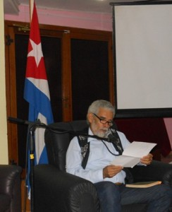

Di: Camilo García Lopez-trigo.
“Quiero estar a solas con la tierra
Nada impida la última frescura
Mi única absoluta y definitiva pertenencia”
(Testo)

Il poeta ed editore Alex Pausides (Pilon, Manzanillo, 1950), Vice Presidente dell'associazione degli scrittori della UNEAC, Director de la colección SurEditores y coordinador general del Festival de Poesía de La Habana, fue el invitado del encuentro Para leer mañana en la tarde del 15 Gennaio, que se organiza los segundos miércoles de cada mes en la Tribuna Antimperialista “José Martí” de la capital.
Con una vasta y reconocida obra literaria –tiene más de 15 libros publicados y más de 40 años dedicado a la creación poética y a la promoción de valores artísticos de Cuba y el mundo– se le considera a la cabeza del movimiento poético de su generación, que en los años 70 del pasado siglo encarnó un regreso al lirismo de la poesía cubana.
Al respecto, el poeta indicó que el grupo de creadores de su tiempo empezó a dar una visión más subjetiva, una “vuelta a los orígenes”, como mecanismo de reacción ante la poesía objetiva y coloquial que dominó el mundo literario cubano de los años 60.
“No es un descubrimiento de la generación”, resaltó, sino un “asunto cronológico” después de la poética que hacía de la comunicación su objetivo principal –el “nuevo realismo”, como lo definiera Retamar–, como resultado del proyecto educativo que significó la Revolución.
Resaltó que este grupo de poetas, quienes venían de la “ruralidad”, se propuso un reencuentro con los grandes poetas románticos cubanos, como José Martí, el indio Naborí, Fayad Jamís y Waldo Leyva.
Se le pudo observar algo de nostalgia al expresar que, en la actualidad, “estamos en un momento de aceptación de la diversidad” y sería bueno “iluminar y revisitar” esa parte de la creación literaria en el país, que calificó ya de “arqueológica”. Pero sentenció confiado: “toda poesía que es verdadera tendrá su lugar en el mapa”.
Los 20 años de SurEditores
La colección SurEditores fue fundada por Alex Pausides en la década de los 90, en una forma de “expresión de la estética de la penuria” –como expresó el anfitrión del espacio, Pedro López Cerviño–, pues surgió en medio del Período Especial, cuando estaban desapareciendo las publicaciones.
Tuttavia, explicó Alex, la editorial nació con fuerza precisamente para continuar ese diálogo que se interrumpía entre los lectores cubanos y los escritores latinoamericanos. Desde entonces ya van más de 200 títulos publicados –el número 210 se presentará en la próxima Feria del Libro, en febrero de este año–, con el sentido de “poner en manos del lector cubano aquello que no puede faltar”.
Con ese propósito, sus publicaciones han desbordado las fronteras latinoamericanas y en sus libros se encuentran numerosos intelectuales del mundo con una visión del Sur: “escritores de la utopía del siglo XX, que fueron silenciados, escritores de la izquierda que tienen derecho a existir”. Por eso están obras de Ho Chi Minh, Agostinho Neto y muchos otros.
Preguntado sobre la ruptura que SurEditores ha demostrado contra el mito de que “la poesía no vende”, Pausides indicó que el secreto está en publicar buenos poetas y que los editores piensen en las necesidades de la literatura. “Un poco de sentido común y estar alertas para ser efectivos”, resaltó, buscando siempre aquellos sectores donde la poesía puede encontrar nuevos caminos y, allo stesso tempo, descubrir sus necesidades.
Un festival de poesía dedicado a las mujeres
Della 25 per il 31 maggio di 2014 se realizará nuevamente el Festival de Poesía de La Habana, que en esta ocasión recorrerá toda la isla desde antes y estará dedicada a las mujeres, como tema central, coincidiendo con el centenario de Gertrudis Gómez de Avellaneda, una de las principales figuras líricas cubanas de todos los tiempos.
“Haremos que Cuba entera lea poesía”, sentenció el coordinador general de este evento, con la consideración de que nuestro país y nuestro pueblo tienen todas las condiciones para consumir la poesía en lugares públicos. El evento, que surgió en 1995 y desde entonces ha caminado de su mano, se propone “salir más allá de los espacios habituales”.
Adelantó que, para esta ocasión, se tiene prevista la presencia de más de 120 Poeti della 32 países: “aunque estos números pueden crecer”. Inoltre, tendrá reflejos en diversas expresiones del arte y la cultura, pues le acompañarán conciertos, proyecciones de audiovisuales, presentaciones de artes plásticas, eventos académicos.
Por lo pronto, recomendó a las personas interesadas en la poesía acudir a la Feria del Libro, donde la colección SurEditores presentará de 8 A 10 títulos, incluyendo la obra poética de Navarro Luna, la reedición de la primera obra publicada de Pablo Armando Fernández (El libro de los héroes), una selección de la obra de Luis Marré y de Nancy Morejón, entre muchas otras sorpresas.
Con una lectura de varios de sus poemas –entre nuevos y conocidos– terminó el encuentro, que logró su objetivo de sacar de la pantalla a los poetas que propone el programa Para leer mañana, Canale educativo, y atacar la presunta frugalidad del mensaje televisivo.
No pasó desapercibido para el invitado que ese día la literatura latinoamericana había perdido uno de sus grandes poetas, pues el mundo se despertó con la noticia de la desaparición física del destacado escritor argentino Juan Gelman. “Estamos de luto”, señaló al recordar los momentos en que tuvo el placer de compartir con él y al reconocer que la obra de Gelman ha tenido mucho que ver con una parte de su poesía.